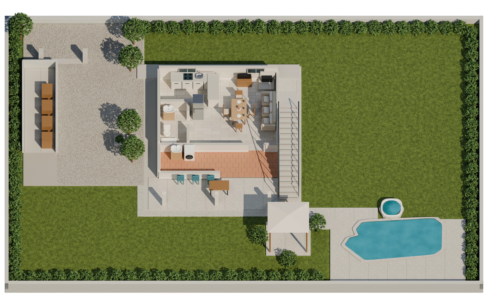

Aller au contenu
Parks
3D
Le projet
Mon accès
↗
Ma maison
Une maison, trois points de vue
← Vue complète
Exploration libre
Ensemble
RDC
Étage

Une voiture qui rentre. Une maison qui s’allume.
Ensemble · RDC · Étage